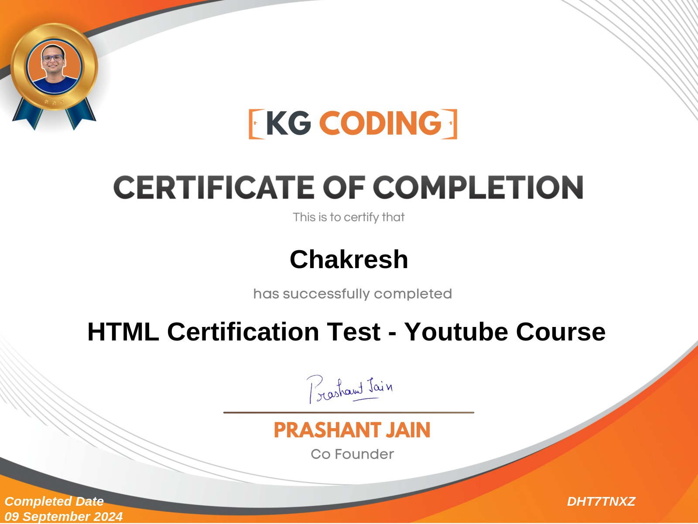

Chakresh Kumar RayB.Tech IT Student I ❤️love Web Development |
Passionate About the Software Development and Web Development Goal is To Achieve a Good Position by Doing Satisfying Work in The It Field, Strongly Focused to Complete the Task in Fast-Faced Environment
| Course | Institute | Year | Result |
|---|---|---|---|
| B.Tech (I.T) | V.B.S.P.U (U.N.S.I.E.T) | 2020-2024 | 69.67% |
| 12 th Grade | Rojmontessori Inter College Semari Sultanpur | 2020 | 66.66% |
| 10 th Garde | Anarkali Yug Nirman SarojPuram Baraunsa Sultanpur | 2018 | 75.83% |
Technical Skills
Communication Skills
OS, Scripting (Perl/Shell), HPC and its Architecture tools (Profiler, Debugger, Monitoring), Analytics &, Statistics using Python, HPC and Parallel Programming, OpenMP, MPI libraries, CUDA, OpenCL, OpenACC, HPC tools (Profiler, Debugger, Monitoring, Computer networks, Cloud Computing.)
Acquired expertise in Machine Learning concepts and tools including Python, Data Exploration, Linear Regression, Logistic Regression, Decision Tree, and Clustering ; Hands-on experience with Python, PyCharm, and MS Excel.
Developed Frontend skills in HTML, CSS, Designed and implemented SEO strategies for web content Also used JavaScript node.js and react.js .
Utilized Machine learning, Decision Tree, Clustering, and Logistic Regression models in Python ,Google Collaboratory for Credit Card Fraud Detection by using Logistic Regression. Which can check the transaction through credit card is true or not ,transaction gone to authorized person or unauthorized person.
Created a user-friendly interface in HTML, CSS, and JavaScript for online ticket reservations System by using HTML5, CSS3 and JavaScript. Which user can visit on website and reserve own ticket such as (IRCTC).
HTML Course Completation
